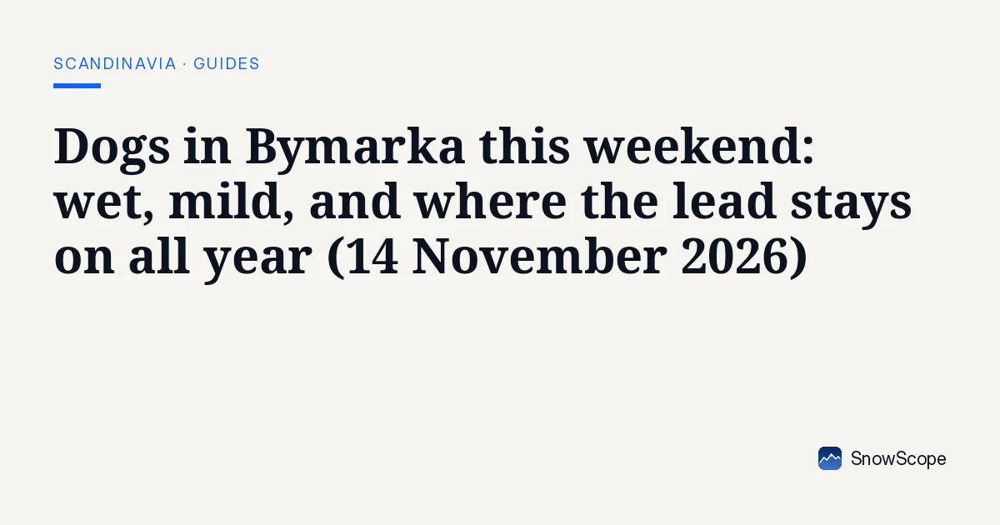

Dogs in Bymarka this weekend: wet, mild, and where the lead stays on all year (14 November 2026)
This weekend will not bring snow to Trondheim's lowlands. The city and its coastal station at Ørland recorded no snow on 13 November; the nearest cover lies inland—5 cm at Meråker and 18 cm at Tågdalen. Saturday may see traces of wet snow, but with temperatures near 5 °C, nothing will settle at sea level.
See the live snow forecast for Trondheim in the SnowScope appSnow depth, powder alerts and the 3D map, free.
Where winter has already arrived
Move east or inland from Trondheim and the picture changes fast. Meråker, 67 km away in the Stjørdal valley, holds 5 cm of snow. Push another 11 km higher to Tågdalen at 415 m and you find 18 cm—a usable base that skiers and walkers can depend on. Storlien, just over the Swedish border at 583 m, measured 8 cm. Røros, the high town 108 km south-east at 630 m elevation, sat on 11 cm. This is the pattern of early November in Trøndelag: height and distance inland decide where winter settles.
Historically, by mid-November Trondheim's coastal zone sees snow only half the time. The middle value is about 2 cm. Last winter, 1 cm lay on the ground by this date; the winter before, the ground was bare. The inland hills have built cover much faster this year—Tågdalen's 18 cm is well above the typical picture for November.

Weekend weather: rain, not snow
Friday afternoon will bring a trace of wet snow, up to 1 cm, but expect little to survive on low ground as temperatures reach 2 °C. Saturday and Sunday shift to rain, mild air at 2 to 5 °C, and no fresh snow. The coast will stay wet. Inland, the existing snow cover will shrink slowly but should hold at higher elevations.
Bymarka this weekend: forest walks on wet ground
Bymarka, the rolling hills and forest immediately south-west of the city, rises to around 400 m and offers your closest chance of snow without leaving the urban zone. Even so, expect wet gravel and mud on the lower trails this weekend. The municipality keeps five main paths ploughed and gritted in winter: Lian to Fjellseter (4 km); a 7 km round from Diket car park at Vådan via Skjelbreia and Stykket; Nilsbyen to Granåsen by Vådan and Frøset (4 km); Smistad to Rønningen (3 km); and Ringvål to Vellikvatnet (2 km). Higher paths in Bymarka will hold more snow than lower ones.
Year-round leash rules in and around Bymarka
Trondheim's general dog regulation—dogs must be on the lead from 1 April to 20 August—is out of force now. But leash rules apply all year in the city. These cover residential and shopping areas, parks, cemeteries, land within 50 m of schools and kindergartens, within 50 m of Jonsvatnet shore and its ice, and the Nidelva corridor.
In Bymarka itself, four main routes require a lead at all times: from Bekken gård car park to Estenstadhytta; from Henriksåsen to Elgsethytta; from Fjellseter to Grønnlia; and from Smistad to Rønningen. Car parks and serving places in the forest are also lead zones. Check these before you walk.
What to pack for mild, wet weather
Rain jackets and good grip on your boots matter more than winter layers this weekend. If you climb to higher parts of Bymarka, the air is cooler and snow patches may appear, so bring a spare layer. Reflective gear is essential on dark afternoons—wet trails make footing uncertain for both dog and walker.
Tips for skiers
- Drive inland or south-west to find real snow. Meråker (1 hour east) or Røros (2 hours south) will reward the drive; Bymarka's higher trails hold more snow than lower ones.
- Keep your lead ready at the car park. All-year leash zones start right at the trailheads in Bymarka.
- The higher parts of Bymarka—above 400 m—offer the best chance of a walk on snow cover this weekend.
- Wet gravel on ploughed trails: wear good boots and bring a reflective vest for both you and your dog on dark afternoons.
- Before 20 August next spring, remember the strict lead rule returns across the whole municipality.
About these numbers
Resort snow depths are the deepest snow on the resort's upper slopes on the date shown; they are estimates for an area, not a measurement at one point. Forecasts can change. Always read the official avalanche bulletin before going off-piste.
Cite this report
For research, teaching or the press: the numbers and charts are free to reuse under CC BY 4.0 with this citation.
SnowScope (2026), Dogs in Bymarka this weekend: wet, mild, and where the lead stays on all year (14 November 2026), https://snowscope.app/blog/en/2026/11/trondheim-dog-snow-weekend-14-november-2026.html, accessed 2026-11-14
SnowScope (Atlas Labs). (2026, November 14). Dogs in Bymarka this weekend: wet, mild, and where the lead stays on all year (14 November 2026). SnowScope snow reports. https://snowscope.app/blog/en/2026/11/trondheim-dog-snow-weekend-14-november-2026.html
BibTeX
@misc{snowscope2026trondheimdogsnowweekend1,
author = {{SnowScope (Atlas Labs)}},
title = {Dogs in Bymarka this weekend: wet, mild, and where the lead stays on all year (14 November 2026)},
year = {2026},
month = nov,
howpublished = {\url{https://snowscope.app/blog/en/2026/11/trondheim-dog-snow-weekend-14-november-2026.html}},
note = {Published 2026-11-14 13:29 UTC; accessed 2026-11-14}
}· CC BY 4.0 · Methods, data and tools →
Follow Trondheim
Free: a message when fresh snow is coming, and the forecast every morning.
More snow reports

Hemavan's mid-mountain has 82 cm of snow on a typical 15 December. Every winter in 46 years had 30 cm or more in mid-December. Data from 13 November 2026.

Hafjell has about 2 cm at the top on 14 November. The forecast adds 9 cm next week, but the base stays bare.

Geilo's mid-mountain stays skiable in 96% of Decembers. Typical depth on 15 Dec: 42 cm base, 57 cm mid, 68 cm top. Day pass from NOK 590.